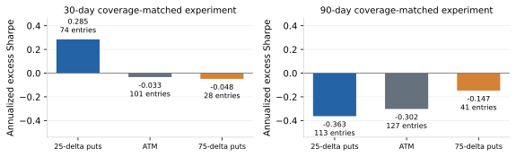
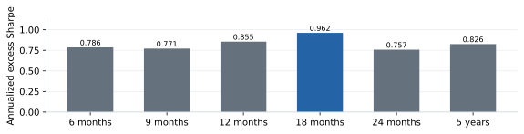
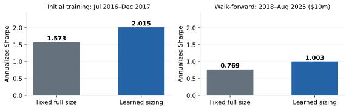
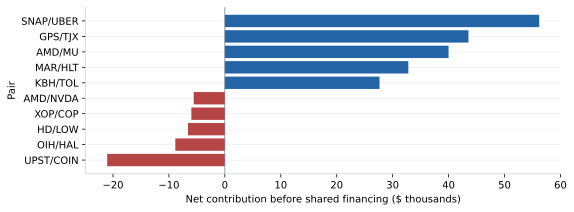
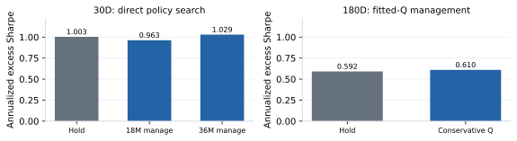
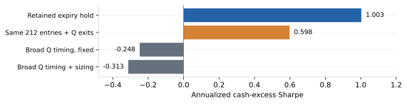
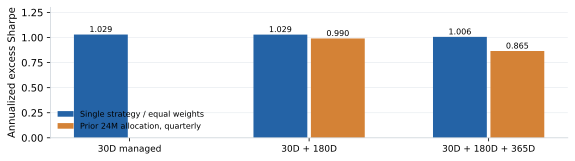

Signal discovery, adaptive exposure and the limits of mean-reversion learning
Adam Kreitzman and Soo Xin Yang | MFE230Z | Research report, 6 October 2026
Abstract
We investigate whether relative option pricing across related equities supports profitable delta-hedged trades, and whether learned allocation improves their risk-adjusted performance. Research begins with ATM implied-volatility proxies, proceeds to actual option contracts, and explores smile locations, maturities, market states and alternative data. The retained configuration uses approximately 30-day, 25-delta puts: historical spread ranks and completed profitability propose trades, while a contextual policy chooses 50%, 75% or 100% of a vega budget. In a $10m funded walk-forward replay from 2018 through August 2025, learned sizing achieves annualized cash-excess Sharpe 1.003 versus 0.769 for fixed full exposure. Longer-history, feature, management and portfolio experiments reveal that learning helps selectively. A paper-inspired Q-learning adaptation weakens the retained strategy. The findings support adaptive allocation within this researched options strategy; repeated selection and concentrated profits limit claims about future performance.
Figure 1. Research design: separate discovery of tradable relative value from allocation and subsequent extensions. The comparisons below retain their individual data and accounting conventions.
1. Research question and motivating paper
Ning and Lee [1] organize equity statistical arbitrage into identification, spread formation and trading. Their empirical mean reversion time (EMRT) measures the time for a spread to return from historical extremes; formation coefficients are chosen to shorten this time. The trading learner then uses recent spread movements to select actions. The useful starting point for our extension is this separation: finding relative value and choosing exposure are distinct problems.
Options make the distinction consequential. An unusually wide IV spread need not converge profitably through the contracts we hold. Delta-hedged returns also depend on realized movements, strike, time decay, costs and financing. We therefore ask three empirical questions: where is the signal, what improves exposure allocation, and which additional decisions should be learned? The report follows those questions, with unsuccessful experiments informing the retained design.
MFE230Z · Research report · 6 October 2026
2. Original evidence and critical assessment
The motivating paper combines EMRT-based formation with tabular Q-learning. Its empirical application forms ten equity spreads in 2022 and trades them in 2023. The published tables report higher daily Sharpe for the combined method than for Distance and Ornstein–Uhlenbeck (OU) alternatives. Figure 2 summarizes the published cross-pair averages using their original daily metric; these values are not directly comparable with our annualized funded-options Sharpe.
Figure 2. Ning and Lee (2024), Tables 3–4: arithmetic mean of reported daily Sharpe across ten pairs, formed in 2022 and traded in 2023. These published equity results use a different metric and setup from our annualized options results.
What the comparison identifies
Formation and trading change together. EMRT changes the spread coefficients, while reinforcement learning changes the trading rule; the resulting improvement does not isolate the learner without a fixed-spread control. One trading year and ten pairs also leave substantial regime uncertainty. Pairs exposed to common market factors do not provide ten independent replications. Broader histories, alternative formation dates and matched costs would strengthen the evidence.
Although the formation method avoids fitting an OU model, the learner trains on synthetic mean-reverting paths with a reward involving a known global mean. That creates a transfer problem when real equilibria change or jumps interrupt convergence. Historical reversion speed describes the observed sample; selecting coefficients to minimize it can favor past behavior without establishing future profitability. We retain the formation/trading distinction while requiring actual contract and hedge P&L for our own evaluation.
Replication details and our translation
The paper describes four move categories and a four-observation state history, but later reports 16 states. Without another compression, these ingredients imply 256 combinations. Its formation discussion also describes a positive coefficient while the table includes a negative CVS/JNJ coefficient. These are details to resolve in a faithful replication. Our successful options checkpoint does not replicate EMRT formation or the paper’s Q-table: it uses return-based pair screens and contextual size allocation. Section 9 separately tests a paper-inspired sequential adaptation.
The distinction is central to interpretation. Equity spread convergence and delta-hedged option profits are different outcomes. Equal initial vega does not equalize gamma, market-volatility beta or jump exposure. Our extension tests whether relative option pricing predicts favorable risk-taking, then whether learning improves its allocation. We do not presume that faster IV-spread reversion must imply a more profitable option pair.
MFE230Z · Research report · 6 October 2026
3. Actual contracts, observable data and execution
Figure 3. Retained P25 strategy: rules propose the direction; the learner adjusts size. Orders use prior-close selected contracts on the next session. Positions hold to each leg’s expiry, except audited corporate exits.
Research began with AMD/NVDA ATM IV and expanded to stock pairs and constituent-versus-ETF ideas. The retained candidate roster contains 345 pair sleeves. The prepared P25 input panel has 36,327 candidate rows across 125 cached pairs and 161 assets; only 608 proposals qualify during the retained evaluation, and 42 pairs trade in the $10m learned replay. The roster, cached panel and executed portfolio are different universes. Coverage varies by date, name, smile location and expiry.
Contract identity and trade proposal
At the signal close, select puts near absolute delta 0.25 and approximately 30 calendar days to expiry. P25 denotes downside OTM puts at selection. Each proposed trade buys one name’s option and sells the other’s; backward return beta must be 0.85–1.15 and return correlation at least 0.5. The IV-spread rank over the preceding 252 sessions must be at the lower or upper quintile. Completed directional profitability memory over 91 and 365 days must be positive, with observation thresholds of 21 and 63. The inherited formation calendar remains retrospectively conditioned.
Orders retain signal-date contract IDs and execute next session subject to quote and risk checks. The full-size target is $450 of vega per volatility point on each leg. Integer counts use execution Greeks, allowing at most 10% initial mismatch. The policy chooses a fraction of this budget. Both legs are puts, but expiries can differ; vega neutrality is established at entry and is not continuously rebalanced. The checkpoint holds each leg to expiry except audited corporate exits.
Accounting and limits
Daily stock hedges offset option delta, with stock exposures netted across shared names. Option and stock cash flows, dividends, cash interest and borrowing reconcile funded NAV. Evaluation charges $0.03 per option contract, 0.10 volatility point per leg at entry, and 1 bp on stock hedge turnover. Training labels retain $0.65 commissions. Midpoint execution with a penalty is an assumed fill model, not verified institutional execution. Quote/Greek fallbacks and corporate exits are audited.
Entry admission uses inherited 5% stress, 80% reserve and 2× gross-hedge limits, alongside pair limits. These research proxies are not broker margin requirements. Held positions can breach limits after entry; early assignment, depth-dependent impact and forced liquidation are absent. Changing account equity can therefore change admissions and Sharpe, not just rescale percentage returns. Numerical results in the main comparison share the $10m account and the same constraints.
MFE230Z · Research report · 6 October 2026
4. Experiment: locate a usable volatility signal
The initial ATM proxy appeared promising, but actual contracts weakened the result. A proxy based on future realized volatility minus entry IV cannot reproduce strike-specific gamma, discrete hedges, mark dynamics or execution. Subsequent actual-ATM experiments reached a sentiment-enhanced 0.368 Sharpe versus a 0.318 baseline [3]; historical review vintages remain unverified. We then examined downside puts, the opposite wing, shorter maturities, and broad action menus. The retained P25 configuration emerged from this exploration; it was not selected before observing these results.

Figure 4. Restricted 30D/90D formation comparison with learned positive sizing floors and matched proposal counts within each wing (P25 213, ATM 222, P75 55). P25 remains strongest at 30D; all three weaken at 90D. This restricted sample is distinct from the retained 608-proposal checkpoint.
A coverage-matched 30D/90D transfer supplies a useful comparison: 30D P25 positive-floor sizing scores 0.285, compared with −0.033 at ATM and −0.048 for P75. At 90D, all three weaken. The restricted P25 sample has 213 proposals, not the checkpoint’s 608; its lower Sharpe is not evidence that the saved checkpoint was lost. Quote availability, formation dates and proposal qualification must be recorded before interpreting performance differences.
Figure 5. AMD/NVDA, 2019: daily rolling selected-contract P25 IV spread and strictly prior rank boundaries. Green markers are signal dates; executions occur next session (12/13 August signals, 13/14 August fills). Gaps remain where either quote is unavailable; this is not the held-cohort mark series.
The retained direction signal buys relatively cheap and sells relatively expensive selected-bucket IV at historical rank extremes. Other screens can veto an extreme; the learner sizes qualifying proposals. The AMD/NVDA example shows the observable signal and subsequent entry dates without replacing unavailable quotes. Its rolling selected contracts are signal inputs; the actual held contract keeps its own strike and expiry. The economic hypothesis is relative richness, not a guarantee that spread convergence is the source of every profit.
MFE230Z · Research report · 6 October 2026
5. Experiments: features and adaptation speed
With the P25 trade proposals frozen, we compared feature blocks individually. The 27-input baseline covers oriented IV differences, ranks, realized/implied volatility, beta, correlation, DTE, VIX, costs and completed profitability. The retained addition supplies EWMA variance premium, its historical z-score and an expected-realized/implied variance ratio, each with an availability field. Missing observations are explicit rather than grounds for dropping a proposal.
Figure 6. Original $345m research reference, identical 608 qualified proposals. Each block is added separately to the prior 27-input state. The retained variance-premium block reaches 1.006; most additional signals fail to improve the 0.962 learned baseline.
The EWMA uses a 20-session half-life and at least 63 observations; the historical z-score uses a shifted 252-session window. These backward measures are forecasting proxies, not demonstrated superiority over a dedicated RV model. Variance-premium inputs improve the research reference from 0.962 to 1.006. Term structure, smile, option activity and employee sentiment fail to improve that baseline; transcripts fall below the best fixed exposure. Sparse IV-factor coverage reproduces the baseline. The feature ranking is a development result, not independent validation.

Figure 7. Monthly positive-floor sizing with alternative training windows, original $345m research reference. The retained 18-month model scores 0.962 versus 0.826 for the five-year reference. These are selected development results; shorter history does not improve monotonically.
The training-window experiment retains monthly refits and positive sizing floors. Eighteen months improves the five-year reference from 0.826 to 0.962, but still shorter windows are worse. These results suggest a useful adaptation/stability balance for this representation; they do not establish a universal optimal window. Both figures use the original $345m research funding reference. Their progression must be separated from the controlled $10m sizing comparison.
MFE230Z · Research report · 6 October 2026
6. Learning: allocate exposure to frozen proposals
Figure 8. Retained contextual learner. Tree partitions map observable states to positive vega budgets; CEM searches allocations jointly. No Bellman continuation, learned exit, or direction reversal enters this checkpoint.
A regression tree with at most eight leaves partitions states using completed outcomes. Cross-entropy method (CEM) policy search assigns 50%, 75% or 100% exposure to each leaf. Candidate assignments are evaluated jointly on aggregated daily historical P&L paths, allowing covariance across allocations to enter the objective. The retained search uses 50 iterations and 192 candidates per iteration. There is no learned skipping, direction reversal or within-trade management in this checkpoint.
This is contextual allocation with direct policy search, not Q-learning: no Bellman update or discounted action continuation is estimated. It is the successful learned-allocation component of our research, but its result does not by itself establish sequential RL superiority. A profit-only allocation objective reaches 0.979 against 1.006 for direct Sharpe; a diagonal-covariance variant reaches an effectively tied 1.007. The common benefit is state-dependent exposure relative to constant size.
Chronological training and initial-fit evidence
Every month uses the preceding 18 months of proposals whose outcomes completed before the cutoff. The January 2018 fit has 74 completed examples from July 2016 onward. Later refits may use earlier evaluation outcomes once completed. Five CEM seeds reproduce the saved NAV with tree partitions fixed, checking search stability for that representation. They do not test alternative tree partitions or research selection.

Figure 9. Learned sizing improves each within-period benchmark. Training uses aggregated P&L paths and $0.65 commissions; walk-forward uses the funded ledger and $0.03 commissions. The levels are not directly comparable.
Initial training improves from 1.573 to 2.015; subsequent $10m walk-forward performance improves from 0.769 to 1.003. Compare fixed versus learned within each panel. Training scores are optimized in sample on aggregated paths with $0.65 labels; evaluation uses the funded ledger and $0.03 commissions. The training panel is neither all pre-2018 history nor an executable pre-2018 account replay. Walk-forward chronology prevents direct outcome leakage, but the repeatedly researched evaluation history is not an untouched holdout.
MFE230Z · Research report · 6 October 2026
7. Main result: learned size improves the portfolio
Policy
Excess Sharpe
Entries
P&L above cash
Fixed 50%
0.761
263
$248,315
Fixed 100%
0.769
133
$272,338
Learned 50/75/100%
1.003
212
$322,637
Figure 10. Actual $10m funded portfolios, 2018–29 August 2025. Curves show 100 × (NAV / same-equity cash benchmark − 1), not total NAV returns. All controls share proposals and risk limits; sizing changes admission and inventory.
The $10m learned replay improves full-size Sharpe by 0.234 and earns approximately $323,000 above cash, versus $272,000 at fixed 100% and $248,000 at fixed 50%. The strategies share all 608 proposals, directions, contract identities, costs and risk limits. They do not execute identical portfolios: size affects integer feasibility, overlapping inventory and risk admission. Fixed half size admits 263 entries, fixed full size 133 and learned size 212. The finding is an account-level allocation improvement under common rules.
Return, capital and exposure
Total funded CAGR is 2.963%, while wealth relative to the cash benchmark compounds at 0.342% annually. Maximum cash-relative drawdown is 0.491%. Cash interest accounts for most total account growth; the plotted excess performance isolates the trading contribution. Peak reserve usage is about 18% and peak gross stock hedge about 0.29× NAV. Reserve is only a research proxy for capital deployed, not actual margin.
Lower equity raises percentage exposure but can alter constraints. At $3m, learned cash-relative CAGR is 0.991% and Sharpe 0.893; at $1m they are 1.135% and 0.552. A smaller denominator alone does not manufacture a higher excess Sharpe, and tighter account resources can reject profitable entries. Scaling studies are therefore separate replays rather than arithmetic changes to the headline return.
Uncertainty in the gain
A $10m paired bootstrap (126-session circular blocks, 1,000 draws) gives an unadjusted 95% interval of −0.031 to +0.416 for the 0.234 Sharpe gain over fixed full size [6]. The interval and repeated strategy selection prevent a strong significance claim. The historical point estimate nevertheless supplies a reproducible comparison of adaptive and constant allocation. The stronger evidence is in walk-forward portfolio performance, not the expected improvement in an optimized training objective.
MFE230Z · Research report · 6 October 2026
8. Diagnostics: regimes, concentration and parity
Figure 11. $10m learned strategy. Sharpe is annualized; calendar-period return above cash is not. The 2025 observation is partial through 29 August. Positive total funded returns can coexist with negative trading excess returns.
Performance is uneven. The strongest contributions occur in 2020, 2022 and 2023, while 2019, 2021 and 2024 are negative. Partial 2025 improves, but does not convert the preceding weak period into independent validation. Calendar returns above cash and annualized Sharpe answer different questions; neither is a total funded return. The 2025 observation ends 29 August after final June signals and contract runoff.

Figure 12. Five largest losing and winning pairs in the original $345m reference. Includes costs, hedges and dividends; excludes shared financing. This is retrospective attribution, not a rule for selecting or banning names.
In the original funding reference, 2022 contributes about 55% of cumulative excess dollars. Pair attribution also shows concentrated winners and losses. These figures motivate risk-context and completed-profitability states, but a retrospective list of winning names cannot become an entry rule without a chronological test. The pair chart excludes shared financing and uses the original research account; it is attribution, not the $10m account’s pair-level Sharpe.
Why puts and calls need careful matching
P25 puts and C25 calls occupy opposite wings; the same-strike call for P25 is approximately C75. On 64 identical 30D cohorts, the parity-Greek control finds similar pre-execution/borrow P&L ($64.6k puts, $65.3k calls), but net values differ ($53.1k, $46.5k). Extra hedge/borrow costs and mark/carry variation matter; return correlation is 0.972 monthly versus 0.470 daily [7].
This subset is not the full checkpoint. Longer-expiry differences remain sensitive to European fits, declared dividends, American exercise and borrowing. The audit motivates implementation checks before attributing put/call differences to alpha; it does not establish arbitrage or independently identify stale quotes.
MFE230Z · Research report · 6 October 2026
9. Extensions: management, maturity and Q-learning

Figure 13. $10m live-admission replays. At 30D, 36-month management adds 0.027 Sharpe, while 18-month management reduces it. At 180D, conservative fitted Q adds 0.018. Algorithms, training schedules and strategies differ across panels; compare controls within each panel.
At 30D, 36-month direct policy search raises Sharpe from 1.003 to 1.029, while 18-month management scores 0.963. The better controller trims five cohorts and closes four. Conservative fitted-Q management at 180D improves fixed-half-size Sharpe from 0.592 to 0.610. These modest selected gains involve different algorithms and strategies; compare within each panel.
A separate one-year entry signal
365D forecast policy
Excess Sharpe
Entries
Forecast, fixed 50%
0.254
580
Same learned skips, fixed 50%
0.273
281
Forecast, learned sizing
0.313
276
A horizon-specific variance forecast fixes one-year direction before learning participation and size. Sizing scores 0.313 versus 0.254 at fixed 50%; fixing size with the same learned skips gives 0.273. Learning direction and size jointly is negative. The gain is statistically uncertain. This signal replaces the older one-year spread strategy.

Figure 14. Paper-inspired actual-P&L fitted Q, plain-P&L reward. The locked exit control preserves original accepted entries/counts (a counterfactual attribution control). Broad cases preserve all 17,967 cached evaluation candidates; 698/729 trades execute. Final model/execution v3 only; risk-penalized variants are separately reported and also fail to beat the checkpoint.
Paper-inspired fitted Q uses recent IV moves, causal reversion history, valuation and inventory, monthly 18-month fits, and actual P&L rewards. It learns direction, flat/size, and hold/close. Broad runs retain 17,967 candidates without old rank/profit vetoes but lose money. On the original 212 entries/counts, Q exits lower Sharpe to 0.598 and excess P&L from $323k to $145k. Risk-penalized variants also fail. This is neither an exact paper replication nor a pure Q-versus-CEM comparison; this state/reward design does not improve the strategy.
MFE230Z · Research report · 6 October 2026
10. Portfolio construction and conclusions

Figure 15. 2018–August 2025 including equal-weight warmup. Longer sleeves are the managed 180D and independently forecast 365D put strategies. Prior-performance allocation fails to beat equal weights. These are combinations of saved sleeve returns, not a new shared-inventory portfolio execution backtest.
Combining saved managed 30D and 180D return streams yields equal-weight Sharpe 1.029; adding the new 365D signal gives 1.006. Allocations estimated from the preceding 24 months and updated quarterly score 0.990 and 0.865, respectively, including warmup. A full-history optimized three-sleeve blend reaches 1.107, an exploratory hindsight reference. These combinations are return-stream experiments; shared capital, hedge netting and inventory require an integrated account backtest before claiming executable portfolio improvement.
What the experiments establish
Our strongest finding is a useful retained downside-put signal whose historical risk-adjusted performance improves under contextual sizing. Feature and training-window experiments explain how we arrived there. Actual-contract testing, weak smile/maturity transfers, unsuccessful broader policies and the Q-learning result define its limits. More information and more actions do not automatically create a better learner; returns depend on the economic signal, available data and allocation formulation.
The next experiment should freeze independently validated signal proposals and compare equal allocation, risk-based allocation and learned portfolio allocation in one shared account. States should include signal strength, completed profitability, correlations, shared names, inventory and capital usage. Subsequent unseen dates and prospective pair formation are needed to distinguish adaptation from accumulated research selection. Better remaining-variance forecasts are also a natural input for position management.
References and reproducibility
[1] Ning, B. and Lee, K. (2024), Advanced Statistical Arbitrage with Reinforcement Learning. arXiv:2403.12180. arXiv:2403.12180
Every figure records source-file hashes in paper/source_manifest.json. Editable figure data and complete experiment tables accompany the report. No model or backtest was rerun for publication. Academic research use only; market and alternative inputs remain subject to their institutional/vendor licenses.